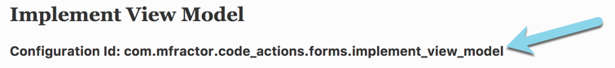

Configuration
Learn to customise MFractor to your project needs
Configuring MFractor Files
MFractor configuration files allow you to change the behaviour of MFractor to better suite it to your own working style.
MFractor configuration files are an XML based file .mfc.xml; a configuration file can be named anything and be placed in any directory in a project as long as it ends in the extension .mfc.xml.
How does it work? Let's consider the following configuration file:
app.mfc.xml
<?xml version="1.0" encoding="UTF-8" ?>
<mfractor>
<!-- Change the behaviour of the Implement View Model code action -->
<configure id="com.mfractor.code_actions.xaml.implement_view_model">
<property name="BaseClass" value="MyNamespace.ViewModels.ViewModelBase"/>
</configure>
</mfractor>
Let's examine each of the each element in the above configuration in depth:
- We open a configuration file with the
<mfractor>tag; this is ceremony to denote to MFractor this is a config file. - We target a configurable by using the
<configure>element:- The
idattribute specifies the unique identifier of the configurable we wish to modify. An id could refer a code action, a code generator or an analysis routine.
- The
- We modify a property using the
<property>element:- The
nameattribute specifies the configurable property we wish to edit. - The
valueattribute specifies the value we wish to set the property to.
- The
Targeting An Element for Configuration
Every element inside MFractor that can be configured has it's own unique configuration identifier. This a unique string that can be used to reference a particular code action, code generator, code analyser etc within MFractor.
For example, the Xamarin.Forms Implement View Model code action has the configuration identifier com.mfractor.code_actions.xaml.implement_view_model.
To discover the ID of a feature you want to customise, locate that feature in MFractor's documentation; a features id is located below the heading inside the documentation:

If we wanted to change the behaviour of the Implement View Model code action, we add a configure element into our .mfc.xml and target the identifier com.mfractor.code_actions.xaml.implement_view_model:
<configure id="com.mfractor.code_actions.xaml.implement_view_model">
</configure>
Inside the configure element we can now specify multiple property tags to change properties inside the configurable.
Configuring Properties
After targeting a configurable, we can use Configurable Properties to change the behaviour of that feature.
Configurable properties are settings that can be edited on a configurable through the use of the property tag.
We place a property tag inside a configure tag; we can then target the property name using the name attribute and apply a new value using the value attribute.
For example, we can change the output folder for new ViewModels by using a property setter on the ViewModelsFolder property:
<configure id="com.mfractor.code_actions.xaml.implement_view_model">
<property name="ViewModelsFolder" value="Path/To/ViewModelsFolder"/>
</configure>
Code Generation Dependencies
Often multiple code actions need to generate the same source; rather than configuring each code action separately each code action reuses a common code generator. A code generator is a configurable that encapsulates the logic needed to generate a specific piece of code.
For example, both the Implement View Model and Generate Missing Command use the Generate ICommand Implementation code generator; this allows us to set the ICommand type once and have the behaviour propagate through all code-actions that need to generate an ICommand implementation.
This documentation site lists the code-generation dependencies under the Uses: section.